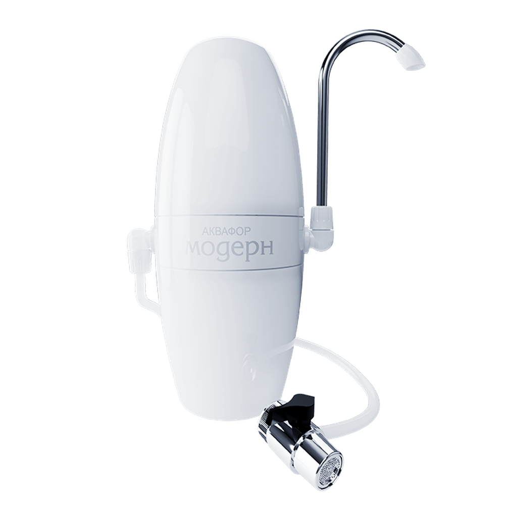

Аквафор Модерн исп. 2
Основной вариант
4000 л
1,0–1,2 л/мин
Только холодная
Корпус с двумя модулями, шланг и переключатель П21. Очищенная вода выходит через поворотный носик из нержавейки на корпусе. В коробке лежат модули B200 для мягкой воды: по инструкции они удаляют хлор, фенол, тяжёлые металлы и пестициды, жёсткость в этом списке не значится.
- Kaspi, Aqua Market 13 000 ₸ Доставка в среду, 7 октября, бесплатно. У «АКВАФОР АЛМАТЫ» 14 000 ₸: самовывоз или экспресс 6 октября до 12:00 за 995 ₸.
- Ozon, арт. 212511 1 631 ₽ Продавец Ozon, бренд проверен, оценка 4,9 при 7 063 отзывах.
- Wildberries, арт. 100473924 1 801 ₽ Цена с WB Кошельком, без него 1 838 ₽. Пометка «Оригинал», оценка 4,8 при 662 отзывах.
Фото: официальный сайт Аквафора.